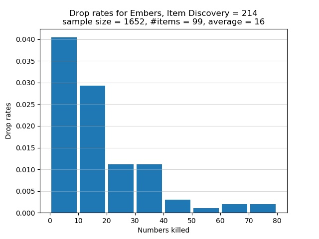

Catacombs of Carthus
The Catacombs of Carthus is a dangerous area for farming Embers, primarily because most of the large skeletons can trigger bleed with their weapons. A number of skeletons have white eyes, meaning they must be killed twice. A Blessed infused weapon is recommended because wielding such a weapon means you only need to kill a white-eyed skeleton once. Unless you can 1-shot each enemy or you also want to farm Vertebra Shackles, I suggest you farm Embers elsewhere.
Start from the Catacombs of Carthus bonfire and make your way to the 2 large skeletons near the giant skeleton ball. Dispose of these 2 skeletons, but beware they tend to stick together. A third white-eyed large skeleton is nearby; fight it with a Blessed infused weapon if you want. Backtrack to the path of the rolling giant skeleton ball, head down the stairs, and dispose of the nearby 4 rats. Leave the large rat alone; you don't need to kill it but make sure not to trigger it. If you don't kill these 4 rats, they would creep up on you and gank you to death while you are dealing with the shotel-wielding large skeleton at the end of the hallway. After defeating the shotel-wielding skeleton, find the path blocked by an illusory wall, walk up the staircase, always keeping to your left so as not to trigger the nearby white-eyed large skeleton. If you walk up the stairs (don't run) and keep to your left, the skeleton usually would leave you alone, but sometimes it would be aggressive towards you. Dispose of this skeleton as quickly as possible, while staying near the area around the staircase you walked up. Moving too far away would also trigger another large skeleton. Kill both skeletons, proceed to the end of the upstairs hallway, and kill the large skeleton who wields a Long Bow. Descend the nearby staircase, take the path where you would find a Crystal Lizard, go to the end of the path to fight a large skeleton who stands near a cliff edge.
I now discuss the drop rates for Embers if you use the above route. The true drop rate for Embers is 3% per large skeleton at the Catacombs of Carthus. With 214 Item Discovery, my chance of a drop is 6.42%. The experimental drop rates are summarized in the histogram below. The horizontal axis shows how many large skeletons must be killed, one after the other, in order for an Ember to spawn. The vertical axis shows the chance of receiving an Ember after successively killing a certain number of large skeletons. Note that each bar in the graph lumps together 10 categories of kills. For example, the first bar represents the cases where I had to kill 0, 1, 2, 3, 4, 5, 6, 7, 8, or 9 large skeletons in a row to obtain an Ember. The second bar represents the cases where 10, 11, 12, 13, 14, 15, 16, 17, 18, or 19 large skeletons must be killed in succession to get an Ember. Instead of having a separate bar for the category of 1 kill, or 2 kills, or 3 kills, etc., I lumped 10 categories of kills into one bar.

In total 1,652 large skeletons were defeated in order to obtain 99 Embers. On average I killed approximately 16 large skeletons in succession for an Ember to spawn. Of the large skeletons who were killed, approximately 6% of them dropped Embers. This proportion is less than my chance of 6.42% of receiving a drop. The graph shows that there is slightly over 4% chance to obtain an Ember after killing between 1 and 9, inclusive, large skeletons in a row. This is the best case scenario. The worst bad luck was the time I had to successively defeat 72 large skeletons to receive an Ember. As the graph shows, there is a chance of less than 0.5% that I had to successively defeat between 70 and 79, inclusive, large skeletons in order for an Ember to spawn.